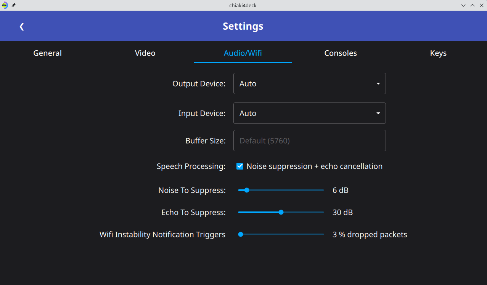
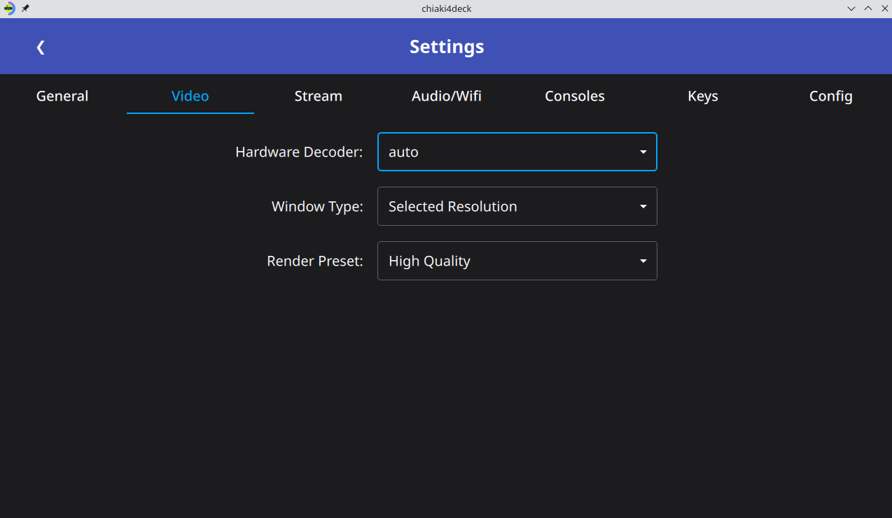
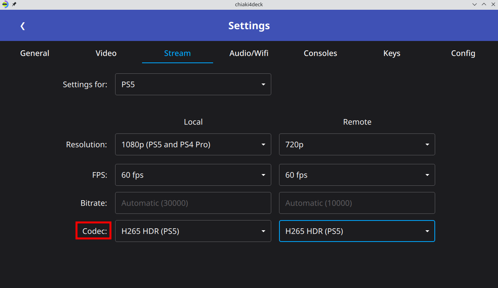
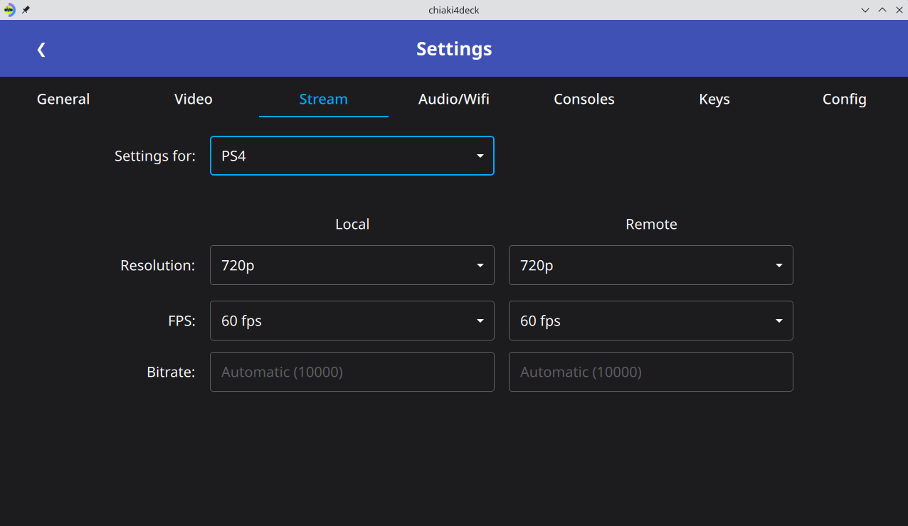

Configuring chiaki-ng¶
Registering your PlayStation¶
-
Set up your PlayStation console for remote play
-
Enable remote play
Go to
Settings -> System -> Remote Playand turn on:Enable Remote Play
-
Go to
Settings -> Remote Play Connection Settingsand turn on:Enable Remote Play
-
Go to
Settings -> Account Management -> Activate as Your Primary PS4and select:Activate
-
Enable waking your console from rest mode
Go to
Settings -> System -> Power Saving -> Features Available in Rest Modeand turn on:Stay Connected to the InternetEnable Turning on PS5 from Network
Go to
Settings -> Power Save Settings -> Set Function Available in Rest Modeand turn on:-
Stay Connected to the Internet -
Enable turning on PS4 from Network
-
-
Get your PlayStation AccountID (This is needed to access your ps account)
-
Wait until step 5 below when you are registering your console, hit the
PSN Loginbutton and login to your PlayStation account on the window that opens.
-
Run the flatpak with the
psn-account-idcommandflatpak run --command=psn-account-id io.github.streetpea.Chiaki4deck -
Follow the prompts, opening a browser and logging in with your PlayStation network account details when prompted.
-
Copy the Account-ID you receive and store it in a safe place. This is the Account-ID used for remote play that is associated with your PlayStation online account username and password.
- Change your PSN privacy settings to allow anyone to find you in your search
- Go to psn.flipscreen.games
- Enter your Account ID
- Copy your encoded id for Chiaki
-
-
Open
chiaki-ng(click the Steam icon in the bottom left and search for it in theGamessection via GUI orflatpak run io.github.streetpea.chiaki-ngviakonsole) and your PlayStation system should be automatically discovered.
What if my PlayStation Console isn't Appearing?
Make sure your client device (i.e., Steam Deck) is on the same wireless network as your PlayStation system and that the PlayStation console is either on or in sleep/rest mode. If this doesn't work, you can always try restarting your client device (i.e., Steam Deck) and connecting to the network again. If it still doesn't work you can try the Manual Registration step in step 5 below.
-
Register your PlayStation console
-
Double click on the blue box to bring up a registration window

-
Choose your console type
-
Enter your PSN Account-ID obtained in step 1 above (if not automatically copied).
-
Get a registration code for remote play
Go to
Settings -> System -> Remote Play -> Link DeviceGo to
Settings -> Remote Play -> Add Device -
Enter the code from your device in the
PINfield -
Click Register (will become available when all necessary fields are filled)
-
Click the gear icon in the top right to go to
Settings -
Click the
consolestab -
Click the blue
Register Newbutton to bring up a registration window
-
Enter your PlayStation's ip address in the
Hostsection replacing255.255.255.255You can obtain your PlayStation's ip address by going in your PlayStation console's settings and going to:
System->System Software->Console Informationand looking at the IPV4 AddressNetwork->View Connection Statusand looking at the IP Address. -
Choose your console type
-
Enter your PSN Account-ID obtained in step 1 above (if not automatically copied).
-
Get a registration code for remote play
Go to
Settings -> System -> Remote Play -> Link DeviceGo to
Settings -> Remote Play -> Add Device -
Enter the code from your device in the
PINfield -
Click Register (will become available when all necessary fields are filled)
-
-
You should see this upon successful registration

-
Click out of the dialog boxes and see that your console now shows registered

Make sure you're on the right tab!
If you haven't set up the Chiaki flatpak on your client device [i.e., Steam Deck], please switch to the New to Using Chiaki/chiaki-ng Tab. If you have set up the official Chiaki flatpak before (no, you don't have to uninstall Chiaki  ) and want to try
) and want to try chiaki-ng, you're in the right place! 
-
Create initial file templates for
chiaki-ng-
Open
chiaki-ngby clicking the Steam icon in the bottom left and searching for it in theGamessection via the graphical user interface (GUI) or by enteringflatpak run io.github.streetpea.chiaki-ngin thekonsole.What if chiaki-ng doesn't appear in the
Gamessection?If
chiaki-ngdoesn't appear in theGamessection, go toAll Applicationsand search forchiaki-ngthere. It should show up in theGamessection, but I've noticed that sometimes it only shows up in its appropriate section after a restart. Going toAll Applicationsworks in all cases. -
Close
chiaki-ng
-
-
Copy your configuration file from the Chiaki flatpak with the following
konsolecommandcp ~/.var/app/re.chiaki.Chiaki/config/Chiaki/Chiaki.conf ~/.var/app/io.github.streetpea.Chiaki4deck/config/Chiaki/Chiaki.conf -
Open
chiaki-ngagain and you should see your registered console and settings from Chiaki now copied tochiaki-ng.What Did I Just Do?
You just replaced the config file (flatpak stores config files for each app in
~/.var/app/appid/configwhereappidis your app's appid) forchiaki-ng(which doesn't have your details yet) with the one for Chiaki (which you already went through the registration process and configured settings for) so that you don't have to go back through the same process withchiaki-ngand can start using it as quickly as possible.
Testing your Connection¶
-
Test waking your console from rest mode
-
Put your console in rest mode
-
Open
chiaki-ng -
Double click on the box with the console icon colored orange (State: standby).
-
When prompted with, "The Console is currently in standby mode.Should we send a Wakeup packet instead of trying to connect immediately?":
- choose Yes
-
Your PlayStation console should wake up and the box with the console icon should turn from orange to blue (State: ready).
Success
Now it's time to test connecting via PlayStation Remote Play in the next step!
Here's how to get back on the happy path
-
Make sure your PlayStation shows as registered and is currently in sleep mode. If it's not in sleep mode, you can't wake it up.
-
Make sure that you have enabled turning on your PlayStation console from rest mode:
Go to
Settings -> System -> Power Saving -> Features Available in Rest Modeand turn on:Stay Connected to the InternetEnable Turning on PS5 from Network
Go to
Settings -> Power Save Settings -> Set Function Available in Rest Modeand turn on:-
Stay Connected to the Internet -
Enable turning on PS4 from Network
-
-
-
Test PlayStation Remote Play
-
Double click on the box with the now blue console icon (State: ready)
-
Test launching a game if you want
-
Exit out of the window once you've tested the connection.
Purrfect

You were able to launch your stream and connect. Maybe, you even got a game running.

An error occurred
-
Please try closing and re-launching to make sure it wasn't some sort of temporary snafu (maybe your console was updating something and didn't want to let you connect right away).
-
Make sure your PlayStation appears in the Chiaki menu, is labelled (registered) and is animated with either an orange (State: standby) or blue (State: ready) light.
-
Choosing your Remote Play Settings¶
Here are different settings you can use for Chiaki/chiaki-ng depending on your network connection. The default configuration is for remote play on a home network only. This means that it is dependent only on the performance / strength of your wireless router (or ethernet connection) [recommended to connect the PlayStation console via ethernet and Steam Deck via wi-fi to optimize performance and portability] and not on your Internet (World Wide Web) connection.
What does that mean for me?
If you are in an area with bad Internet, as long as you have a good wireless router, you can get close to native performance.
-
Open
chiaki-ngand click the gear icon in the top right to open the settings menu
-
Adjust the settings to your preferences.
-
General Settings

Enabling Experimental PlayStation 5 Features (PS5 Users Only)
If you want to enable haptics for Steam Deck and DualSense (must be attached via USB) and adaptive triggers for DualSense (USB or bluetooth), check the box that the red arrow is pointing to in the image above. This is opt-in now since these features are currently experimental. Additionally, for the DualSense controller to work with these features in game mode, please disable Steam Input for the DualSense controller following the "Turning off Steam Input" tab in this section.
Use Buttons by Position Instead of by Label
This enables the option to use the face buttons of your controller by position (i.e., NSEW) as opposed to by their label (i.e., ABXY). This enables you to use a Nintendo-style controller and still be able to use the buttons in the same positions as on a PlayStation controller instead of the swapped Nintendo controller positions.
Use Steam Deck in Vertical Orientation
For Steam Deck, this enables the option to use the Steam Deck in vertical orientation in games that assume a horizontal controller for motion controls. Since most PlayStation games assume a horizontal facing controller, (even though data is sent for using the controller in any orientation) most games only work if the Steam Deck is horizontal (like you would hold a DualSense/DualShock 4 controller). This option enables you to play those games in vertical mode by allowing you to use roll instead of yaw and having a vertical orientation correspond to a horizontal facing controller. Some games, such as Astro's playroom use the orientation values and enable you to use the controller in various different positions (i.e. this option isn't needed for using the controller in vertical orientation for that small subset of games).
Putting your PlayStation Console to Sleep Automatically
For
Action on Disconnect, chooseAsk(the default) to get prompted (use the touchscreen to respond to prompt window) about putting your PlayStation to sleep when you close your session with Ctrl+Q (you will add this shortcut as part of you controller configuration in controller section).If you prefer, you can also use
Enter Sleep Modeto automatically put your PlayStation console to sleep as soon as you close your session with Ctrl+Q -
Audio/WiFi Settings

-
Video Settings

-
Stream Settings
(choose the PS5 HDR tab if you have a PS5 connected to a HDR TV/monitor (see HDR section below for more details), PS5 if you have a PS5 not connected to an HDR TV/monitor, and PS4 if you have a PS4). If you are having issues with your PS5 connection, please try switching to 720P following with its default bitrate of 10,000 with your PS5 since that requires significantly less bandwidth from your wireless router.
Stream output with HDR. This are the recommended PS5 settings for a device that supports HDR such as the Steam Deck OLED.

Why 1080p if the client device [i.e., Steam Deck] is only 800p?
Using 1080p results in a better picture for me than 720p. The biggest factor in this seems to be chroma-sub sampling. In simple terms, the colors for an image are compressed and so you get a much lower resolution of color data than your image resolution. This means a 1080p image (with a high bitrate) will have more color data than a 720p image even if the image resolution itself ends up being 720p (since the color resolution will be higher than the equivalent 720p picture's color resolution). This results in an image that has more pop to it. Thus, I recommend streaming at 1080p if you have the bandwidth (good enough wireless router).
However, if you are having issues with your wireless connection (i.e choppy audio, flashes in your video, or lag) while playing, then please use 720p instead. The gains you get from 1080p are nice, but aren't worth having a bad connection.
These are the recommended PS5 settings for a device that doesn't support HDR like the ROG Ally.

Why 1080p if the client device [i.e., Steam Deck] is only 800p?
Using 1080p results in a better picture for me than 720p. The biggest factor in this seems to be chroma-sub sampling. In simple terms, the colors for an image are compressed and so you get a much lower resolution of color data than your image resolution. This means a 1080p image (with a high bitrate) will have more color data than a 720p image even if the image resolution itself ends up being 720p (since the color resolution will be higher than the equivalent 720p picture's color resolution). This results in an image that has more pop to it. Thus, I recommend streaming at 1080p if you have the bandwidth (good enough wireless router).
However, if you are having issues with your wireless connection (i.e choppy audio, flashes in your video, or lag) while playing, then please use 720p instead. The gains you get from 1080p are nice, but aren't worth having a bad connection.
This is the recommended setting for a PS4. If you have a PS4 pro you can use 1080P instead.

-
HDR (High Dynamic Range)¶
HDR is now supported when you select the H265 HDR (PS5 only) codec option. For HDR to work you need to:
-
Use an HDR device such as the Steam Deck OLED or an OLED monitor attached to your client device for streaming (non-HDR device will still work but use tonemapping instead of outputting HDR)
How do I know when HDR is active on my Steam Deck?
You can see when HDR is active by hitting the quick access button (3 dots button on the bottom right of the Steam Deck) going to the gear icon and looking at
BRIGHTNESS. When HDR is active there will be a purple/blue banner to the right of theBRIGHTNESSlabel. -
Connect your PS5 to a device such as an HDR TV or monitor (depending on the connected HDR TV/monitor it may also need to be turned on for the PS5 to output HDR)
How do I know if the PS5 is outputting HDR?
You can test the PS5 is outputting HDR by going to a game that has HDR settings in the menu such as Cyberpunk 2077 or Ghost of Tsushima and seeing if the game will let you adjust those.
-
Enable HDR in your PS5 settings (need to be connected directly to your PS5 and not via remote play to access this menu) by going to
Settings -> Screen and Video -> Video Output -> HDRand selecting eitherAlways OnorOn When Supported. -
Select
H265 HDR (PS5 only)as your codec option inchiaki-ng -
Launch
chiaki-ngvia gamescope (i.e., game mode on the Steam Deck)
Adjusting PS5 HDR for my client decice [i.e., Steam Deck]
You can adjust the PS5 HDR settings for optimal viewing on the client device [i.e., Steam Deck] via the system-wide PS5 settings (need to be connected directly to your PS5 and not via remote play to access this menu) by going to Settings -> Screen and Video -> Video Output -> Adjust HDR. You'll want to do this if your display brightness (i.e., nits) is different from the Steam Deck OLED's 1000 nits. According to the folks over at HDTVTest (via arshiatn) for an 1000 nits display you want to use 15-15-0 for the HDR settings. To set this in the Adjust HDR set move 15 steps (15 presses of the right key on the dpad of the PlayStation controller) for the first test screen, 15 steps from the beginning for the 2nd test screen and 0 steps from the beginning on the last test screen.
Please note that this will also affect the settings for your connected display so if you are switching between remote play and TV play often keep that in mind. Certain games also have their own HDR settings you can adjust while remote playing in their respective game menus or when beginning the game.
Auto Connect¶
If you have one console you want to connect to remotely or locally you can use the auto-connect feature to launch it automatically on launch. If you have multiple consoles to launch into you can instead use the automation section.

Profiles¶
You can switch between profiles in chiaki-ng so if, for example you have 2 users that both use the same device you can create a profile for each user. You can see your current profile listed at Settings (Gear icon)->Config->Current profile. You can create, switch, and delete profiles via Settings (Gear icon)->Config->Manage Profiles.
Creating a profile¶
- Open Settings (Gear icon on top right of main screen)
- Choose the
Configtab - Click the
Manage Profilesbutton - Choose
create new profilefrom dropdown - Type in the name of the profile
- Click
Create Profile(this creates the new profile and switches to it)
Deleting a Profile¶
- Open Settings (Gear icon on top right of main screen)
- Choose the
Configtab - Click the
Manage Profilesbutton - Choose profile to delete from dropdown
- Click delete checkbox
- Click
Delete Profile(this deletes the profile)
Why can't I delete the profile?
You can't delete your currently selected profile or the default profile since the default profile needs to be able to be loaded and the current profile is in use.
Switching Profiles¶
- Open Settings (Gear icon on top right of main screen)
- Choose the
Configtab - Click the
Manage Profilesbutton - Choose profile to switch to from the dropdown
- Click
Switch Profile
Creating Shortcuts Using a Profile¶
To launch directly into a particular profile (instead of the last selected one) you can use the --profile option. This will automatically be filled in when creating a Steam shortcut using the given profile via the Create Steam Shortcut button. You can also manually include this in your options by adding --profile=profile_name to the appropriate place for your desktop shortcut (usually after the path to chiaki-ng) or in Steam's case to the end of the Launch Options section.
Performance of Chiaki/chiaki-ng¶
My Experience¶
Ultimately, the performance will depend on the capability of your wireless router and which system (\(PS5 > PS4 Pro > PS4\)) you are using. Here are some notes from my experience using chiaki-ng on my Steam Deck with a PS5 console and a relatively good (\(450 Mbps\) for \(2.4GHz\) / \(1,300 Mbps\) for \(5GHz\)) wireless router.
My Wireless Connection by the Numbers
I'm using the \(5GHz\) band for chiaki-ng on my Steam Deck, meaning the total bandwidth for all devices on my local network is \(1,300 Mbps\) (remember Internet connection itself doesn't matter since we're only using our wireless router for local streaming). Since I am using the settings in Choosing Your Remote Play Settings, I'm using \(30,000 Kbps\) or \(30 Mbps\) out of the total of \(1,300 Mbps\). This means I'm using about \(2\%\) of my \(5GHz\) band. In other words, I still have plenty of bandwidth for watching Netflix  while I play on my Steam Deck!
while I play on my Steam Deck!
What Performance Can I Expect?
I am currently getting close to native performance using chiaki-ng on my Steam Deck with my PS5. This gives me better performance than I get playing performance heavy games directly on Steam Deck (like that one game where the kid gets bit by a  )
)
Benefits:
- 5-6 hours of battery life (vs 1-2 hours playing the same games natively on Steam Deck)
- access to PlayStation collection (games I have already purchased or have via PS Plus) including exclusives
- no fan noise when playing
- PlayStation Trophies
Negatives:
- occasional performance issues with certain games (specifically games with VSync enabled)
Games I've Played Successfully Using chiaki-ng So Far...
- Stray
- God of War (2018)
- Genshin Impact (turned off VSync in settings to get rid of white flashes during gameplay)
- Sekiro (occasional white flashes in areas with high crowds. Luckily, these went away as I got further in the game and never affected my ability to progress. Unfortunately, this seems to be due to VSync being enabled automatically with no option to turn it off. It only affected about 3 hours of the game in total [12 flashes with 1 or 2 every 15-30 minutes or so] before it went away completely).
- Fall Guys
- MultiVersus
- Red Dead Redemption 2
- Marvel's Spider Man
- Ghost of Tsushima (changed from Resolution Mode to Performance Mode in game settings for native-like performance)
- Chicory: A Colorful Tale
- Concrete Genie
- Astro's Playroom
- Death's Door
- Resident Evil 0
- The Last of Us Remastered
- Many More ...
Troubleshooting Performance Issues¶
Examples of performance issues
- white flashes
- green flashes
- audio choppiness/crackling
- excessive lag
To fix these issues, try the following:
-
If you are not using the settings listed in Choosing Your Remote Play Settings, try with those settings and see if that fixes it for you. The biggest of these is using a HW Decoder option for your system which should help significantly.
-
If you are on Steam Deck OLED and you are using the Steam Deck after waking up from sleep, please trying turning the wifi off and then back on in the Steam Deck settings and see if this improves your performance (this is likely due to a WiFi driver issue with the Steam Deck OLED on certain networks so can't be fixed by chiaki-ng)
-
Switch to 720p from 1080p
720p requires less bandwidth than 1080p. This will help if your wireless connection is the problem, especially since it's very easy to do. This can fix video artifacts (white / green flashes) and audio choppiness (both results of connection problems).
-
Try short preamble
If you are still having trouble (I didn’t need this but it can help in general and helped significantly improve performance for other streaming services such as Game Pass on my Steam Deck), try using using short preamble instead of long preamble in your router settings. You need to change this directly in your router settings for the given network and can do it per network if you set up more than one. This is incompatible with old devices (using wifi b/g instead of n or ac). Devices from 2011 and newer are required by law to support it and so will definitely work. Older devices may or may not support it depending on if they have either n or ac wireless support. Short preamble helps the \(5GHz\) connection for devices that support it (essentially anything that’s connecting on a \(5GHz\) network should use it). For streaming, you can set up one network that uses short for your newer devices (\(5GHz\) network for me) and one with long for older devices (\(2.4 GHz\) network for me since older devices don’t support \(5GHz\) anyway). My connection worked fine with long preamble on a \(2.4 GHz\) network for Chiaki but short (and a \(5GHz\) network for that matter) works better in general for devices that support it and has helped others using Chiaki as well as me to help reduce Game Pass streaming lag (which is still much worse than Chiaki and not close to native, but works well for games that don’t require fast or moderately fast reaction times).
-
For specific game issues, change game resolution settings
For example, the game may be set to 4k / resolution mode even though it's only streaming at 1080p or even 720p. Additionally, it may be using HDR (which the Steam Deck screen doesn't support). Switching these settings off on a game level results in less processing power used on the game and thus more left over for streaming as well as hitting a higher framerate. For example, I switched
Ghost of Tsushimafrom resolution mode to performance mode and noticed that the occasional performance problems I was experiencing evaporated and the visual quality became much more stable due to the lack of occasional stutters. It went from being playable but a noticeable downgrade to indistinguishable from native. -
Turn off VSync or the equivalent in games that use it
VSync should only be enabled on the client side while streaming and having it enabled in the game itself can cause issues since it requires some extra overhead and can't actually sync with your screen if you're streaming the game. This resulted in issues with white flashes for me while playing Genshin Impact and Sekiro. When I turned off VSync in the Genshin Impact settings, these flashes (which had happened multiple times a minute with VSync on) disappeared. This affects only a small number of games, but is something to watch out for if you randomly have an issue with one game while others run well with Chiaki/
chiaki-ng. -
Switch framerate to 30fps
30fps requires less bandwidth than 60fps. This will help if your wireless connection is the problem, especially since it's very easy to do. This can fix video artifacts (white / green flashes) and audio choppiness (both results of connection problems). I put this last because it is the biggest performance downgrade and most of the time you don't need to do this. However, switching to 30fps / 720p at the default settings is the most surefire way to fix connection issues and a last resort if the methods with virtually no downsides don't do the trick.
Chiaki/chiaki-ng via Internet (Outside of Home Connection)¶
Chiaki/chiaki-ng Outside of your Home Network
You can also either the remote connection via PSN or open up ports to connect from the Internet, but the performance will not be as good, with increased input lag being the most noticeable downgrade. In this scenario, your connection will depend on both the Internet connection of your PlayStation console via the router and the Internet connection of your computer via your location (internet speeds themselves will apply). The farther away (more hops from your router) you get, the worse the performance will get. If you are still in the same state, it will likely still be relatively good. However, if you go cross-country or something like that, it can degrade significantly. Nevertheless, it can be very convenient to use while traveling, especially when playing less timing intensive games (i.e., games that would play well via cloud streaming). Setup is covered in the remote connection section.
Created: September 1, 2022